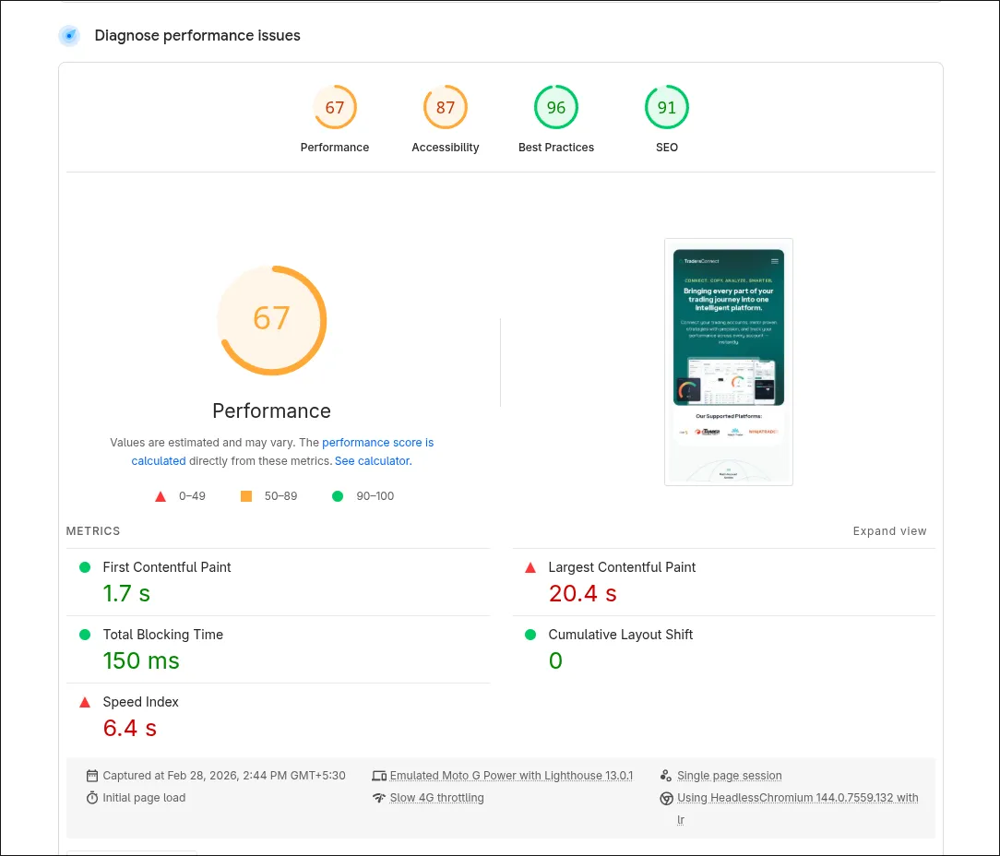
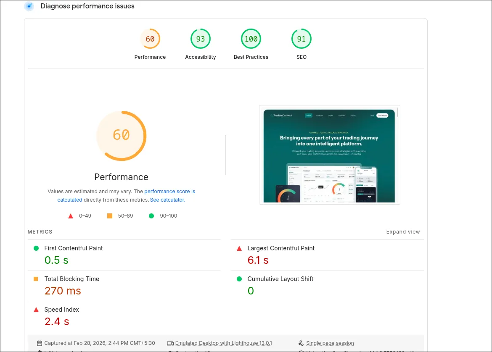
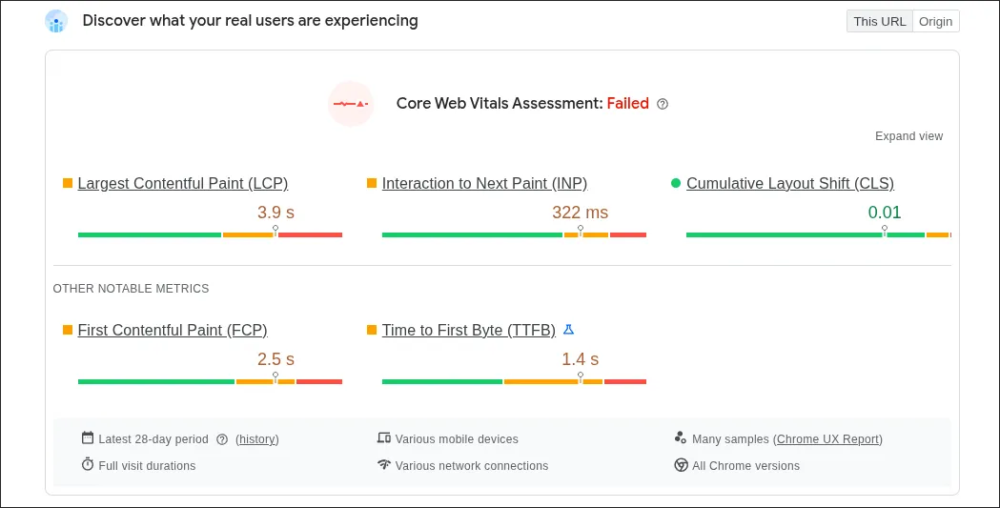
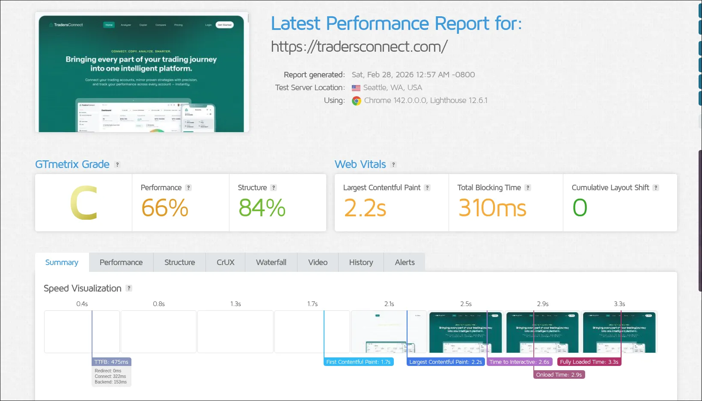
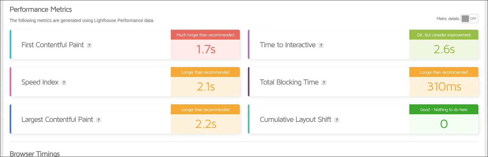
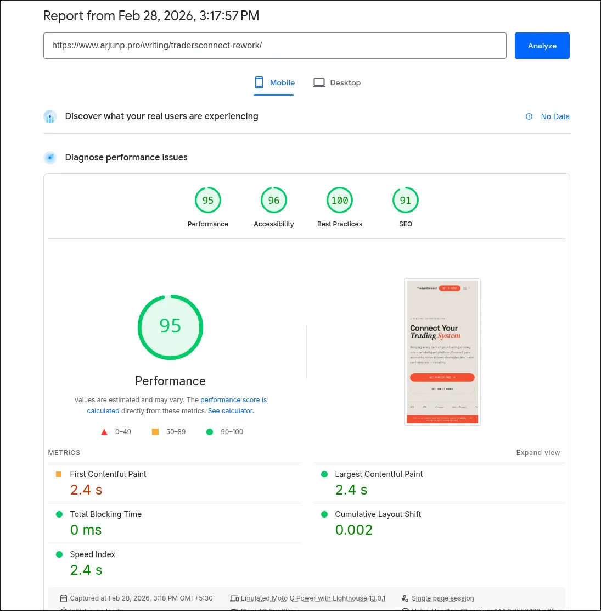
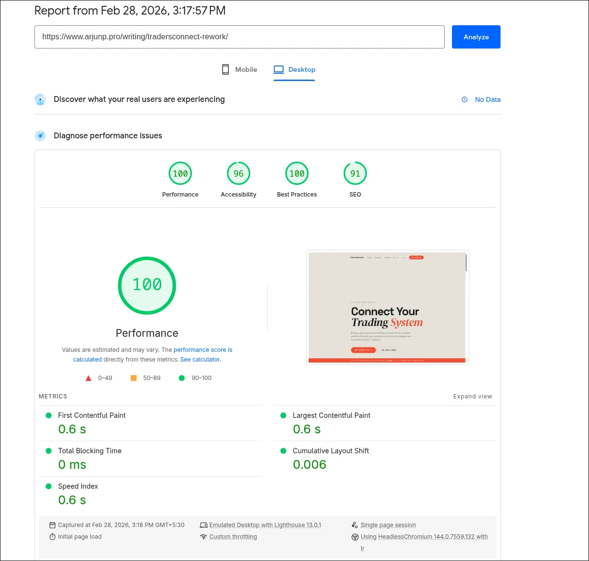
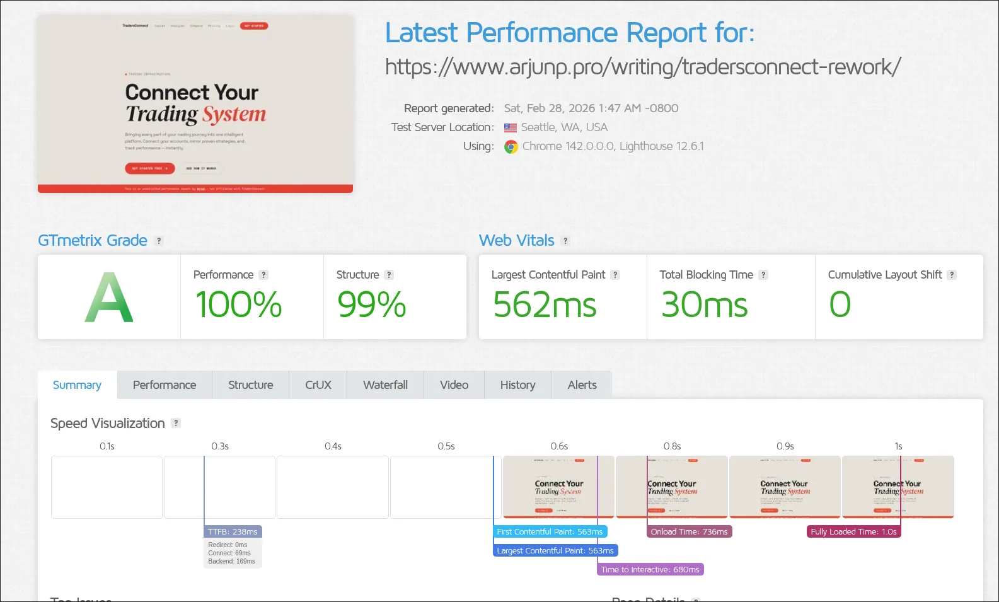

What Happens When You Drop the Framework
From Lighthouse 67 to 100. GTmetrix C to A. 3.3s to 1.0s fully loaded. Zero frameworks.
Disclaimer: This is an unsolicited redesign and performance audit. I am not affiliated with, employed by, or endorsed by TradersConnect. This project is a technical exercise to demonstrate frontend performance optimization skills.
I wanted a real-world test for a simple thesis: most landing pages don't need JavaScript frameworks. They need HTML, CSS, and fast servers. TradersConnect was a good candidate — a legitimate product with a landing page that's measurably underperforming. Failing Core Web Vitals, 3.9s LCP in the field, 322ms INP from real Chrome users.
The goal wasn't to critique their team. It was to take the same content and rebuild it from scratch with performance as the only constraint — then measure the difference.
I ran the original tradersconnect.com through Lighthouse, PageSpeed Insights (with CrUX data), and GTmetrix. The numbers were consistent across all three - the site is significantly underperforming.
Lighthouse
Lighthouse scores on the original site. Mobile performance is hit hardest - a 20.4s LCP means most users are staring at a blank or partially loaded page for an unacceptable amount of time.


Core Web Vitals (CrUX)
The Chrome User Experience Report tells the real story - data from actual users in the field, not synthetic tests. TradersConnect's Core Web Vitals assessment: Failed.

GTmetrix
GTmetrix confirmed the pattern - Grade C with 66% performance. The speed visualization shows the page doesn't become visually complete until 2.5s, with full load at 3.3s.


Key Issues Found
- 20.4s LCP on mobile — the largest contentful paint takes over 20 seconds
- 150–310ms Total Blocking Time across tools — the main thread is blocked during load
- 1.4s TTFB from real user data — slow server response before the browser even starts
- 322ms INP in CrUX — interactions are noticeably sluggish
- Core Web Vitals assessment: Failed — this directly impacts Search ranking
With the audit done, the rules were straightforward: same content, no frameworks, no build tools, no images. Ship the smallest possible page that still looks like a real landing page — not a stripped-down demo.
Performance Strategy
- Zero frameworks - Pure HTML/CSS. No React, no Next.js, no Tailwind. The entire page is a single self-contained HTML file
- Inline everything - All CSS is in the document head. No external stylesheet requests. No render-blocking resources beyond the HTML itself
- Self-hosted fonts - Space Grotesk loaded from local woff2. Google Fonts used only for two display weights (DM Serif Display italic, Space Mono) with
display=swap - No images - All visual interest comes from typography, layout, and CSS micro-animations. Zero image requests
- Minimal JS - 6 lines total: IntersectionObserver for navbar scroll state, section reveal animations, and mobile menu toggle
- SVG noise texture - Single inline SVG with feTurbulence filter at 4% opacity for paper texture. Under 200 bytes
Design Decisions
The visual design is different from the original — this isn't a pixel-for-pixel recreation. The point was performance, not redesign. But a landing page still needs to look like a landing page, so I went with a typographic approach that generates all visual interest from fonts, layout, and CSS animations instead of images.
- Three typefaces with distinct roles: Space Grotesk for headings, DM Serif Display italic for hero drama, Space Mono for data and metrics
- All visual interest from CSS — micro-animations, typographic scale contrast, and layout density replace images entirely
- Dark terminal-style previews for product sections, borrowing from the trading tools the product actually sells
Single File Architecture
The entire page lives in one HTML file. No build step, no bundler, no node_modules. CSS custom properties handle theming, clamp() handles responsive typography, and CSS Grid handles layout at every breakpoint. The total file size is 43KB.
CSS Animations Instead of JS Libraries
The feature cards each have a CSS-only micro-animation that would typically require GSAP or a similar library. A card shuffler cycles through stacked cards using offset @keyframes with rotation and translate transforms. A typewriter cursor blinks with a simple opacity toggle. A scheduler dot pings outward with a scaling ring animation.
/* Card shuffler — pure CSS, no JS */
@keyframes shuffle1 {
0%, 70% { transform: translateX(-50%) rotate(-2deg) translateY(0); }
80% { transform: translateX(-50%) rotate(3deg) translateY(-80px); opacity: 0; }
81% { transform: translateX(-50%) rotate(-1deg) translateY(-20px); opacity: 0.4; z-index: 1; }
100% { transform: translateX(-50%) rotate(-2deg) translateY(0); opacity: 1; z-index: 3; }
}
/* Scheduler ping — replaces JS-driven pulse */
@keyframes sched-ping {
0% { transform: scale(0.8); opacity: 0.5; }
100% { transform: scale(2.2); opacity: 0; }
}All scroll-triggered reveals and the navbar state change run on a single IntersectionObserver setup. The entire JavaScript for the page:
// Navbar: transparent → solid on scroll
const n=document.querySelector('.nav'),h=document.querySelector('.hero');
new IntersectionObserver(([e])=>
n.classList.toggle('scrolled',!e.isIntersecting),
{threshold:.1}
).observe(h);
// Section reveals
const r=document.querySelectorAll('.reveal');
const o=new IntersectionObserver(e=>e.forEach(i=>{
if(i.isIntersecting){i.target.classList.add('visible');o.unobserve(i.target)}
}),{threshold:.08,rootMargin:'0px 0px -40px 0px'});
r.forEach(el=>o.observe(el));
// Mobile menu toggle + auto-close on link tap
const hb=document.querySelector('.nav-hamburger');
if(hb){hb.addEventListener('click',()=>{
const open=n.classList.toggle('nav-menu-open');
hb.setAttribute('aria-expanded',open)
});}Noise Texture Without Images
The paper texture that eliminates the flat digital look is a single inline SVG with an feTurbulence filter. It sits as a fixed overlay at 4% opacity. Under 200 bytes, no image request, and it tiles infinitely.
<svg class="noise" aria-hidden="true">
<filter id="n">
<feTurbulence type="fractalNoise" baseFrequency="0.65"
numOctaves="3" stitchTiles="stitch"/>
<feColorMatrix type="saturate" values="0"/>
</filter>
<rect width="100%" height="100%" filter="url(#n)"/>
</svg>Responsive Without Media Query Hell
CSS clamp() handles most of the responsive scaling. The hero heading goes from 52px to 96px, section titles from 32px to 52px — all without breakpoint-specific overrides. Explicit media queries only handle structural changes like grid column counts and mobile navigation.
/* Typography scales fluidly — no breakpoints needed */
.hero h1 { font-size: clamp(52px, 9vw, 96px); }
.section-title { font-size: clamp(32px, 4.5vw, 52px); }
.metric-number { font-size: clamp(32px, 3.5vw, 48px); }
/* The "TC" watermark scales from 280px to 520px */
.hero-watermark { font-size: clamp(280px, 42vw, 520px); }Same content, same information hierarchy, same number of sections. Here's what changed when the framework came off.
Lighthouse - Before vs After


GTmetrix - Before vs After

Summary
A landing page scored 100 on Lighthouse desktop, 95 on mobile, and Grade A on GTmetrix - with zero JavaScript frameworks, zero images, and a 43KB page weight. The original needed 3.3 seconds. This needed 1.
Compare the original site with the reworked version. Run Lighthouse on both to see the difference yourself.
This is a static landing page rebuild, not a full application. There are real constraints to what I could optimize without access to their infrastructure.
What I Couldn't Do
- No server access - couldn't implement CDN edge caching, HTTP/2 push, or Brotli compression at the server level
- No real user analytics - optimizations are based on synthetic testing (Lighthouse, GTmetrix), not RUM data
- No backend integration - the rework is static content only. The original has authentication, dashboards, and API connections
- Font loading is limited - Google Fonts adds external requests that I'd eliminate entirely with full self-hosting
What I'd Do With Full Access
- Set up edge caching with Cloudflare or Vercel for sub-100ms TTFB globally
- Self-host all fonts - eliminate the two Google Fonts requests and preload from local woff2
- Implement a service worker for instant repeat visits and offline capability
- Add Real User Monitoring to track Core Web Vitals in production and catch regressions
- Apply the same performance-first approach to the authenticated dashboard pages